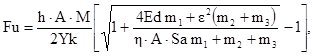
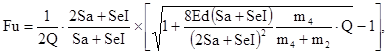
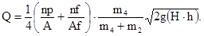

ДЕПАРТАМЕНТ СТРОИТЕЛЬСТВА
НАУЧНО-ТЕХНИЧЕСКОЕ УПРАВЛЕНИЕ
НИИМОССТРОЙ
ВЕДОМСТВЕННЫЕ СТРОИТЕЛЬНЫЕ НОРМЫ
УКАЗАНИЯ
ПО ОПРЕДЕЛЕНИЮ
НЕСУЩЕЙ
СПОСОБНОСТИ И НЕОБХОДИМОЙ
ДЛИНЫ СВАЙ
ВСН 31-95
МОСКВА 1997
Указания по определению несущей способности и необходимой длины свай разработаны лабораторией оснований и фундаментов НИИМосстроя (зав. лабораторией В.А. Трушков).
В указаниях учтен производственный опыт строительных организаций Департамента строительства при устройстве свайных фундаментов в жилищном строительстве г. Москвы.
Указания обобщают накопленный за период с 1975 по 1995 гг. опыт испытаний забивных свай, применяемых для уточнения требуемой глубины погружения свай путем пробной забивки.
Указания согласованы с акционерным обществом холдинговой компанией «Главмосстрой» и государственным предприятием - трестом Мосстрой-5
|
Департамент строительства |
Ведомственные строительные нормы |
ВСН 31-95 |
|
Научно-техническое управление |
Указания по определению несущей способности и необходимой длины свай |
ДС |
1.1. Настоящие указания составлены на основе обобщения опыта статических и динамических испытаний забивных свай, являются дополнением к СНиП и распространяются на работы по определению несущей способности и необходимых длин забивных свай в жилищном строительстве Москвы.
1.2. При определении несущей способности и необходимой длины забивных свай надлежит руководствоваться главами СНиП по проектированию свайных фундаментов, ГОСТ 5686-78* «Сваи и сваи-оболочки. Методы полевых испытаний» и настоящими указаниями.
|
Внесены |
Утверждены Научно-техническим управлением Департамента строительства «15» сентября 1995 г. |
Срок введения в действие «1» октября 1995 г. |
2.1. Необходимая глубина забивки свай фундамента и допустимая на них расчетная нагрузка устанавливаются проектной организацией на основании материалов инженерно-геологических изысканий в соответствии с конструктивными особенностями фундамента, действующими на него вертикальными и горизонтальными нагрузками, допустимыми величинами деформаций здания. При этом учитываются результаты зондирования грунта и испытания пробных свай, если они выполнялись, опыт эксплуатации построенных вблизи зданий, а также обстоятельства, могущие повлиять на несущую способность свай и величину их осадок под нагрузкой (наличие слоя слабого грунта, подсыпка территории, рытье грунта вблизи свай и т.д.).
2.2. Напряжения в материале свай от действующих на них вертикальных и горизонтальных нагрузок и изгибающих моментов, с учетом допустимого отклонения свай от проектного положения, не должны превышать величин, нормируемых СНиП «Бетонные и железобетонные конструкции».
2.3. При назначении необходимой длины свай следует использовать разработанные ГлавАПУ г. Москвы «ВТУ по расчету, проектированию и производству свайных фундаментов зданий и сооружений в г. Москве», содержащие обобщенные геологические профили, привязанные к разным районам г. Москвы, с рекомендациями несущего слоя и длины свай.
2.4. Длина свай должна быть назначена с учетом грунтовых условий и глубины залегания кровли несущего слоя. В г. Москве в качестве несущего слоя могут быть использованы: моренные суглинки и глины днепровского и московского оледенения; флювиогляциальные пески; юрские глины ниже их кровли не менее чем на 2 - 3 м. При опирании нижних концов свай на карбонные глины, известняки и гравийно-галечниковые отложения необходимой мощности с песчаным заполнением несущую способность свай следует определять как для свай стоек в соответствии со СНиП «Свайные фундаменты».
2.5. Не допускается оставление нижних концов свай в торцах и заторфованных грунтах, сапропелях, сапропелитах, илах, илистых суглинках, текучих суглинках, озерно-болотных отложениях и плывунах.
2.6. В г. Москве для песчаных не насыщенных водой грунтов (кроме пылеватых) и глинистых грунтов при показателе текучести от 0,4 до 0,6 включительно, с содержанием органических остатков не более 3 % для песка и 5 % для глинистых грунтов, при определении несущей способности свай, по таблицам 1 и 2 СНиП 2.02.03-85 следует учитывать увеличение сопротивление грунта при уплотнении его забивкой или в результате тиксотропного упрочнения и консолидации.
2.7. Динамические и статические испытания пробных свай производятся в соответствии с ВСН 200-83 «Инструкция по производству работ нулевого цикла при строительстве домов повышенной этажности».
2.8. Необходимость проведения статических испытаний одиночных свай определяется проектной организацией с учетом результатов инженерно-геологических изысканий или результатов испытания свай динамическими нагрузками.
Испытания свай статическими осевыми вдавливающими нагрузками производятся:
а) в случаях сложных грунтовых условий, когда сваи погружаются в слабые грунты, представленные торфами, заторфованными грунтами, сапропелями и сапропелитами, текучими суглинками, насыпями и другими сильносжимаемыми грунтами;
б) на объектах с предполагаемым количеством свай более 2000 шт.;
в) для высотных зданий с большими нагрузками на фундамент;
г) в тех случаях, когда расчетная нагрузка на сваю должна быть высокой;
д) контрольные статические испытания рабочих свай фундамента производятся, если нет уверенности в том, что их несущая способность соответствует требованиям проекта. Сваи, назначенные для статического испытания, следует располагать в пределах контура здания на наиболее нагруженных участках при неблагоприятных грунтовых условиях.
2.9. Испытываемые статической нагрузкой сваи необходимо предварительно испытать (после соответствующего отдыха в грунте) динамической нагрузкой в соответствии с разд. 4 настоящих указаний, с записью упругой и остаточной части отказа.
2.10. При испытании статической вдавливающей нагрузкой должно быть испытано до 1 % от общего количества свай на данном объекте, но не менее 2 шт.
2.11. Количество пробных свай, подлежащих испытанию динамической (ударной) нагрузкой, принимается 2 % от общего числа свай на данном объекте, но не менее 5 шт.
2.12. Работы по забивке и испытаниям пробных свай выполняются по заданиям проектных организаций специализированными организациями Главмосстроя и производятся в соответствии с перечисленными в п. 1.2 настоящих указаний нормативными документами.
2.13. Техническая документация на забивку пробных свай с указанием их типов, длины и несущей способности, разработанная проектной организацией, передается в 2-х экземплярах специализированной организации Департамента строительства, выполняющей пробную забивку свай. Указанная документация должна содержать:
а) план здания с указанием и привязкой на нем местоположения геологических скважин (шурфов), точек статического и динамического зондирования грунта, пробных Свай, подлежащих забивке и испытанию, подземных коммуникаций (газопровод, канализация, водосток, теплосеть, водопровод, кабели и др.), существующих строений и т.д.;
б) техническое задание на испытание пробных свай в грунте, а также техническое заключение об инженерно-геологических условиях участка строительства.
2.14. Места расположения на строительной площадке пробных свай, испытываемых динамической нагрузкой, и длина их должны назначаться с таким расчетом, чтобы получить необходимые данные для назначения расчетной нагрузки на сваи фундамента и определения необходимой глубины их забивки на всех характерных участках проектируемого свайного поля.
2.15. При рядовом расположении свай в фундаменте расстояние между пробными сваями рекомендуется принимать не более 30 м.
При кустовом (или многорядном) расположении свай расстояние между ними в кусте, их длину и несущую способность (особенно при песчаных грунтах) рекомендуется определять с учетом результатов пробной забивки фрагментов из нескольких свай в характерных местах строительной площадки с испытанием отдельных свай динамической или статической нагрузкой.
В тех случаях, когда уплотнение грунта в результате забивки препятствует погружению части свай куста на заданную глубину, расстояние между сваями в проекте следует по возможности увеличить, сократив соответственно число свай в кусте за счет увеличения в допустимых пределах нагрузки на каждую сваю.
Если в кусте нельзя уменьшить число свай принятого сечения в связи со значительной нагрузкой на них, следует рассмотреть вопрос о применении в фундаменте свай другого сечении с большей несущей способностью.
2.16. В качестве пробных свай могут применяться как обычные железобетонные, так и инвентарные, извлекаемые после испытания сваи конструкции НИИМосстроя, забиваемые специальной самоходной установкой.
2.17. Испытания пробных свай производятся в соответствии с техническим заданием специализированной организацией (отделом контроля качества треста Мосстрой-5) под наблюдением представителя проектной организации и лаборатории оснований и фундаментов НИИМосстроя.
Несущая способность пробных свай определяется в соответствии со СНиП 2.02.03-85 «Свайные фундаменты», ГОСТ 5686-78* «Сваи и сваи-оболочки. Методы полевых испытаний».
Результаты испытания пробных свай специализированная организация передает проектной организации, которая принимает окончательное решение о конструкции фундамента, расчетной нагрузке на сваи и необходимой глубине погружения их и грунт.
3.1. При производстве свайных работ специализированная организация производит забивку каждой сваи фундамента до сопротивления, обеспечивающего указанную в проекте несущую способность сваи, определяемую динамическим методом в соответствии с главой СНиП «Свайные фундаменты».
3.2. Глубину погружения свай в процессе их забивки при необходимости следует уточнять по согласованию с проектной организацией. Для этого рекомендуется до массового завоза свай на строительную площадку первые рабочие сваи забивать в отдельных точках свайного поля с таким расчетом, чтобы охватить по возможности все его характерные участки.
Необходимость такой проверки, а также количество и места забивки этих свай устанавливаются проектной организацией.
Указанные сваи следует располагать так (например, по периметру свайного поля), чтобы после погружения в грунт они не мешали передвижению сваебойного агрегата при последующей забивке свай.
3.4. Динамическое испытание свай, указанных в п. 3.3 настоящих указаний, производится сразу же после их забивки и затем часть свай повторно испытывается после отдыха в грунте не менее 3 сут.
Если после указанного отдыха (3 сут) несущая способность каждой испытанной сваи, определенная в соответствии со СНиП, равна или больше несущей способности, требуемой проектом, частное значение предельного сопротивления сваи Fu, определенное в соответствии с разделом 4 настоящих указаний, за время отдыха не уменьшилось, результаты испытания считаются положительными и забивка рабочих свай уточненной длины продолжается.
Если на однотипном участке свайного поля несущая способность одной или нескольких испытанных свай оказалась менее требуемой проектом, частное значение предельного сопротивления сваи Fu за время отдыха не увеличилось, результат испытания считается отрицательным и сваи на данном участке по согласованию с проектной организацией необходимо забить на большую глубину и повторить испытания. Если сопротивление сваи Fu за время отдыха увеличилось, следует испытать сваи после более длительного «отдыха», когда несущая способность их будет не меньше проектной.
3.5. Во всех случаях несоответствия между проектной и фактически необходимой длиной свай решение об окончательной глубине погружения свай, о внесении дополнительных изменений в проект свайного фундамента принимается проектной организацией.
3.6. При испытании рабочих свай динамическим методом с вычислением их несущей способности по формуле главы СНиП «Свайные фундаменты», не учитывающей упругую часть «отказа», величина остаточной части отказа от одного удара молота должна быть не менее 0,2 см, так как при меньшей величине отказа несущая способность свай, вычисленная по указанной формуле, может оказаться значительно завышенной.
При испытании железобетонных свай сечением 30×30 см, длиной до 12 м одиночными ударами дизельного молота С-330 (без подачи горючего) высоту падения ударной части следует принимать 180 см.
4.1. Сопротивление сваи Fu определяется динамическим методом при фактически измеренных остаточных отказах Sa.
Сваи, испытываемые динамической нагрузкой, не должны иметь повреждений, которые могут повлиять на результаты испытаний; отклонение от вертикали допускается на величину не более 1 см на 1 м длины сваи.
При испытании следует обеспечить соосность молота и сваи, чтобы их соударение было по центральной оси. В наголовнике сваи вместо деревянной должна быть упругая войлочная прокладка толщиной 50 - 60 мм.
4.2. Упругая и остаточная часть отказа сваи при каждом ударе молота записываются безынерционным отказомером конструкции НИИМосстроя на специальной вощеной бумаге, наклеиваемой на одну из ровных боковых поверхностей сваи.
Если наголовник сваи расположен непосредственно над грунтом и установить отказомеры ниже него затруднительно, бумага для записи наклеивается с двух противоположных сторон на шарнирную пяту молота (в случае двухштангового дизель-молота) или на наголовник сваи при других типах копров.
Отказомер конструкции НИИМосстроя крепится к доске толщиной 2,5 см, уложенной возле сваи плашмя на две деревянные подкладки, плотно опирающиеся на грунт и расположенные под концами доски не ближе 1 м от испытываемой сваи. Доска придвигается к свае настолько, чтобы перо отказомера слегка прижалось к наклееной на свае бумаге. После этого доску следует закрепить на подкладках так, чтобы исключить возможность ее перемещения. Перед первым ударом и после каждого последующего перо отказомера следует переместить горизонтально на 5 - 6 мм.
После испытания вощеная бумага снимается со сваи и величины упругой и остаточной части отказа, записанные на ней пером отказомера, измеряются с помощью лупы с точностью 0,1 мм.
4.3. Динамические испытания сваи следует производить, сбрасывая ударную часть молота с точно измеренной высоты, принимаемой для гидравлического копра «Юнттан» равной 50 см, для дизельного молота С-330 - 180 см. При этом удары дизельного молота должны быть «холодными» без подачи горючего в цилиндр молота.
4.4. При динамических испытаниях забивных свай частное значение предельного сопротивления сваи Fu при фактически измеренных остаточных отказах Sa > 0,002 м определяется по формуле (18) п. 5.7 СНиП 2.02.03-85:

где η - коэффициент, принимаемый для железобетонных свай с, наголовником в случае определения отказов, равным 1500 кН/м2 (150 тс/м2);
А - площадь, ограниченная наружным контуром сплошного или полого поперечного сечения ствола сваи (независимо от наличия или отсутствия у сваи острия);
М - коэффициент, принимаемый при забивке сваи молотами ударного действия равным единице;
Ed - расчетная энергия удара молота при забивке, КДЖ (тcм). Для молотов одиночного действия равная GH, для штангового дизель-молота - 0,4GH, трубчатого дизель-молота - 0,9GH при контрольной добивке одиночными ударами - G(H - h);
G - масса ударной части молота, кН (тс);
Н - фактическая высота падения ударной части молота, м;
m1 - масса молота, т;
m2 - масса сваи и наголовника, т;
m3 - масса подбабка, т;
Sa- фактический остаточный отказ, м;
ε - коэффициент восстановления удара; при забивке железобетонных свай молотами ударного действия с применением наголовника с деревянным вкладышем ε2 = 0,2
4.5. Если фактический измеренный остаточный отказ Sa < 0,002 м, то необходимо для забивки предусмотреть молот с большей энергией удара. Тогда остаточный отказ будет Sa ≥ 0,002 м, а в случае невозможности замены сваебойного оборудования и при наличии отказомеров сопротивление сваи Fu следует определять по формуле (19) п. 5.7 СНиП 2.02.03-85:

где SeI - упругий отказ сваи, включающий упругие перемещения грунта и сваи, м;
Q - коэффициент, 1/кН (1/тс), определяемый по формуле (20) п. 5.7 СНиП 2.02.03-85, где А, m2, m4 то же, что в формулах (18) и (19);
np nf - коэффициенты перехода от динамического к статическому сопротивлению грунта, принимаемые: под нижним концом сваи np = 0,00025 с.м/кН (0,0025 с.м/тс);
на боковой поверхности сваи nf = 0,025 с.м/кН (0,25 с.м/ тс);
Аf - площадь боковой поверхности сваи, соприкасающаяся с грунтом, м2;
g - ускорение свободного падения, равное 9,81 м/с2;
h - высота первого отскока ударной части дизель-молота от воздушной подушки, определяемая по мерной рейке, м;
для предварительных расчетов принимать:
при штанговых молотах h = 0,6 м;
при трубчатых молотах h = 0,4 м.

5.1. При производстве работ по устройству свайных фундаментов зданий надлежит соблюдать правила техники безопасности, предусмотренные СНиП «Техника безопасности в строительстве», «Правилами устройства и безопасной эксплуатации грузоподъемных кранов» Госгортехнадзора РФ, «Руководством по производству свайных работ и технике безопасности при эксплуатации копров и копрового оборудования на базовых машинах (экскаваторах, тракторах, кранах и др.) и рельсовом ходу», разработанным ЦНИИОМТП, и настоящими Указаниями.
5.2. Приступать к производству свайных работ, монтировать копровый агрегат, завозить на площадку и складировать сваи и выполнять другие сопутствующие работы разрешается при наличии приказа по строительной организации, выполняющей свайные работы, о начале производства свайных работ на объекте и поименном закреплении исполнителей этих работ, а также при наличии проекта производства работ, двухстороннего акта о готовности к производству строительной площадки и ордера на производство работ.
5.3. До начала строительных работ на объекте инженерно-технический персонал, бригадиры и звеньевые должны подробно ознакомиться со спецификой строительных конструкций и методами производства работ по рабочим чертежам и проектам производства работ.
Рабочие должны быть проинструктированы и обучены безопасным приемам по всем видам выполняемых ими работ.
5.4. Машинисты экскаваторов, кранов и копровых установок, копровщики, такелажники, сигнальщики и сварщики должны быть обучены по специальным программам и иметь удостоверения о сдаче экзаменов по технике безопасности.
5.5. К работам, связанным с забивкой свай, срубкой их и монтажом сборных оголовков на сваи, допускаются рабочие-мужчины не моложе 18 лет, прошедшие обязательное медицинское освидетельствование, обученные по профессии копровщика и строповщика с правом работы на высоте, прошедшие курсы по технике безопасности работ, сдавшие экзамены квалификационной комиссии и имеющие соответствующие удостоверения.
5.6. Экскаваторы, краны и другие механизмы перед эксплуатацией должны быть освидетельствованы и в необходимых случаях испытаны в соответствии с существующими правилами.
5.7. Работа сваебойной установки без оформления акта о вводе ее в эксплуатацию запрещается.
5.8. Перед началом работ и периодически во время работ все такелажные, монтажные приспособления и инвентарь (стропы, траверсы, подкосы, струбцины и др.) должны подвергаться освидетельствованию и осмотру. Применять, подбирать и выбраковывать грузозахватные приспособления, стальные канаты, стропы, чалки следует в соответствии с действующими «Правилами устройства и безопасной эксплуатации грузоподъемных кранов» Госгортехнадзора РФ.
5.9. Производство каких-либо работ, не имеющих непосредственного отношения к выполняемому технологическому процессу, в опасной зоне запрещается (например, в опасной зоне запрещается осуществлять раскладку свай или монтаж хомутов на сваи, а также при срубке свай монтаж сборных оголовков на сваи и др.).
Опасной зоной при производстве свайных работ считается зона вблизи размещения копра с границей, проходящей по окружности, центром которой является место забивки очередной сваи, а радиус равен полной длине копровой стрелы (мачты) плюс 5 м, с включением линейной зоны шириной 10 м, расположенной вдоль оси троса для подтягивания свай от места стоянки копра к месту раскладки свай.
Площадки, где производится складирование, перемещение и раскладка свай (перед подтягиванием их к копру), также относятся к опасным зонам.
Опасной зоной при срубке голов свай считается круговая зона вблизи срубаемой сваи с радиусом, равным длине выступающей над землей части сваи плюс 5 м.
Все опасные зоны на площадке должны быть обозначены хорошо видимыми предупредительными знаками и надписями.
5.10. Запрещается располагать копровую установку на расстояние меньше 50 м от места производства работ по выемке котлованов или траншей, а также от мест рыхления грунта (в том числе мерзлого).
5.11. Запрещается установка и работа сваебойных агрегатов и кранов на свеженасыпанном грунте, а также на площадках с уклоном, большем указанного в паспорте, инструкции по эксплуатации машины или в проекте производства работ.
5.12. Запрещается в пределах призмы обрушения котлованов, траншей и прочих выемок располагать и устанавливать машины, краны, копровые агрегаты, оборудование, а также складировать сваи, панели, строительные детали и машины.
5.13. Монтаж и демонтаж копра производятся по имеющейся в паспорте схеме или по проекту производства работ под непосредственным руководством механика и мастера.
5.14. Для выхода из котлованов и траншей по откосам должны быть сделаны стремянки или трапы с боковыми ограждениями. В зимнее время их надлежит очищать от снега и наледи и посыпать песком.
5.15. Порядок транспортирования свай, места их разгрузки, складирования и раскладки, а также использование грузозахватных приспособлений определяются проектом производства работ (ППР).
5.16. Грузоподъемный кран, выполняющий разгрузку и перемещение сваи, обслуживается такелажниками в количестве, предусмотренном правилами Госгортехнадзора; один из такелажников назначается старшим.
5.17. При транспортировании и хранении в штабелях свай круглого (трубчатого) сечения должны быть приняты меры по предотвращению их раскатывания (расклинка, стяжка и т.п.).
5.18. Высота штабеля свай квадратного и прямоугольного поперечного сечения с подкладками и прокладками не должна превышать 2 м, а свай круглого (трубчатого) сечения - 1,5 м. При транспортировании количество рядов свай по высоте не должно быть более трех.
5.19. Подъем свай при погрузке, разгрузке, укладке в штабель и раскладке их в котловане производится двухветвевым стропом при длине свай до 12 м и траверсами при длине свай более 12 м.
Угол, образованный двумя ветвями стропа, не должен превышать 90°. Направлять сваи во время подъема, укладки их в штабель или раскладки разрешается только с помощью оттяжек, при этом не касаясь руками сваи.
5.20. Работы по забивке рабочих свай должны производиться в соответствии с проектом производства работ.
5.21. Запрещается вести забивку свай в охранных зонах, например, в охранной зоне воздушных линий электропередачи, без согласования с организацией, эксплуатирующей линии.
5.22. Забивка свай вблизи подземных коммуникаций, а также вблизи проложенных электрокабелей и в охранной зоне воздушных линии электропередачи производится при наличии наряда-допуска, подписанного главным инженером строительной организации, и в присутствии представителя эксплуатирующей организации. При этом допуск бригады к выполнению работ разрешается только после ознакомления (под расписку) всех членов ее с проектом производства работ и рабочим проектом данного объекта и после инструктажа на рабочем месте с выдачей наряда на особо опасные работы.
5.23. Оставлять сваи или молот подвешенными на тросе копра запрещается.
5.24. Наголовник и молот (или молот, оснащенный наголовником) опускаются на сваю после установки ее на точку погружения и разворота граней специальным ключом по заданным осям.
5.25. При перемещении копра по строительной площадке молот должен находиться в нижнем положении. Перемещение копра с подвешенной сваей запрещается.
5.26. Нахождение людей непосредственно под молотом или подвешенной сваей запрещается.
5.27. Перед пуском молота в работу бригадир (звеньевой) обязан предупредить об этом всех, находящихся у копра, и лично убедиться, что люди находятся на своих рабочих местах. Допуск к рабочим местам посторонних лиц запрещается.
5.28. При погружении железобетонных свай в грунт для предохранения голов свай от разрушения, а копровщиков от поражения осколками следует применять специальные наголовники с деревянными или войлочными вкладышами-амортизаторами.
5.29. В целях избежания излишнего подъема молота в процессе погружения свай следует устанавливать специальные ограничители подъема молота.
5.30. Ремонтировать или смазывать копры и молоты во время их работы запрещается.
5.31. Запрещается оставлять на копровой стреле, молоте и других механизмах копра после их ремонта какие-либо предметы или инструменты.
5.32. Выдергивание или извлечение поврежденных или отклонившихся от проектных допусков свай копрами или копровыми установками запрещается. Отверстия, оставшиеся в грунте после извлечения пробных свай, должны быть засыпаны и ограждены.
5.33. Устройство лидирующих скважин должно выполняться в строгом соответствии с рекомендациями проекта. При извлечении из грунта лидирующих устройств копровая стрела должна опираться на грунт.
5.34. При работе копров на слабых или водонасыщенных грунтах в условиях засасывания грунтом ходовых устройств или перемещений должны быть разработаны проекты, предусматривающие использование специальных заготовленных щитов, дорожных плит и др.
5.35. В зимних условиях должны быть приняты меры против вмерзания ходовой части копра в грунт и по обеспечению нормальной работы узлов и механизмов копра и молота.
5.36. Погружение наклонных свай может осуществляться только копрами, оснащенными специальными механизмами для наклона копровой стрелы.
5.37. При погружении свай в процессе их забивки молотом на величину менее 0,1 см от одного удара работы по забивке свай следует прекратить, так как такой режим работы сваебойного оборудования выведет его из строя.
5.38. При эксплуатации сваебойных самоходных установок запрещается:
а) работать на неисправной установке;
б) забивать поврежденные сваи;
в) перемещать установку с поднятой копровой мачтой при уклонах местности более 3 %;
г) использовать копровую установку для погрузочно-разгрузочных работ;
д) оставлять в поднятом положении ударную часть дизель-молота;
е) оставлять на грузовом кране груз в подвешенном состоянии;
ж) смазывать штанги или поршень дизель-молота во время работы;
з) подходить к забиваемой или испытываемой свае во время работы молота или при поднятой ударной части молота;
и) производить подъем, установку и забивку свай копровой установкой на базе КО-8 без опирания ее на аутригеры. Находиться вблизи захватного устройства установки во время его подъема и опускания при извлечении инвентарных свай.
1. СНиП 2.02.03-85. Свайные фундаменты. М., Стройиздат, 1986.
2. ГОСТ 5686-78*. Сваи и сваи-оболочки. Методы полевых испытаний.
3. Свайные работы. Справочник. М., Стройиздат, 1979.
4. СНиП 2.02.01-83. Основания зданий и сооружений. М., Стройиздат, 1983.
5. СНиП 3.02.01-83. Основания и фундаменты. М., Стройиздат, 1983.
6. Временные технические указания по расчету, проектированию и производству работ свайных фундаментов зданий и сооружений в г. Москве. М., ГлавАПУ г. Москвы, 1987.
7. ВСН 200-83. Инструкция по производству работ нулевого цикла при строительстве жилых домов повышенной этажности. М., 1985.
8. ГОСТ 19804-91. Сваи забивные железобетонные. Общие технические условия.
9. ГОСТ 19804.4-78. Сваи забивные железобетонные квадратного сечения без поперечного армирования ствола. Конструкция и размеры.
10. ГОСТ 19804.2-79*. Сваи забивные железобетонные цельные квадратного сечения с поперечным армированием ствола с напрягаемой арматурой. Конструкция и размеры.
11. ГОСТ 25100-82*. Грунты. Классификация.
12. ГОСТ 20522-75. Грунты. Метод статической обработки результатов определений характеристик.
13. Руководство по инженерно-геологическим изысканиям для проектирования свайных фундаментов. М., 1974.
14. СНиП III-4-80*. Техника безопасности в строительстве. М., Стройиздат, 1980.
15. Правила устройства и безопасной эксплуатации грузоподъемных кранов. М., Металлургия, 1981.
16. Руководство по производству свайных работ и технике безопасности при эксплуатации копров и копрового оборудования на базовых машинах и рельсовом ходу. ЦНИИОМТП. М., Стройиздат, 1978.
СОДЕРЖАНИЕ